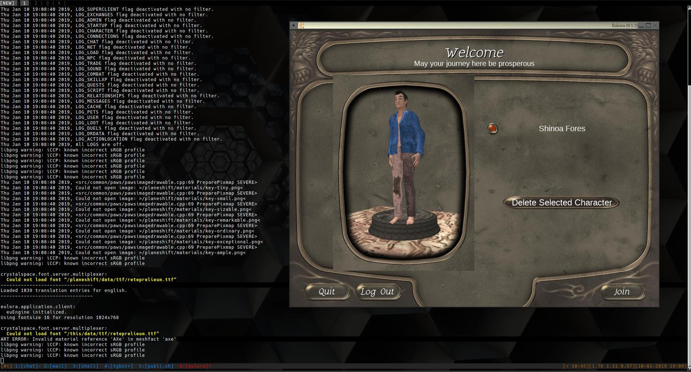

Building the Eulora client with Gentoo
Having gotten trinque's excellent Cuntoo bootstrap working on a few different machines, I decided I'd try building a Eulora client with it. This post is to document the steps I followed to get to a working state, as the instructions on the minigame website are outdated and contain dead links.
In this guide, I am using gcc 4.9.4 - I'm pretty sure this is a hard requirement. Crystalspace for whatever reason requires you have the nvidia-cg-toolkit installed even if you use an ATI card, so go ahead and get that via portage:
emerge -av nvidia-cg-toolkit
I have a ~/devel directory already from building trb, so I'll start there and make a eulora directory beside it:
mkdir -p eulora/ && cd $_
Grab cal3d, crystalspace, and the Eulora client files from the minigame site:
wget http://minigame.biz/eulora/source/cal3d.tar.gz wget http://minigame.biz/eulora/source/cs_July24.tar.gz curl http://minigame.biz/eulora/source/eulora-v0.1.2b.tar.gz > eulora-v0.1.2b.tar.gz
Untar that shit.
tar -zxvf cal3d.tar.gz tar -zxvf cs_July24.tar.gz tar -zxvf eulora-v0.1.2b.tar.gz
Navigate to cal3d/ and run the following commands to build:
autoreconf --install --force ./configure --prefix=$HOME/devel/eulora/cal3d make make install
Tell other programs where to find the cal3d things we just built:
export LD_LIBRARY_PATH=$HOME/devel/eulora/cal3d/src/cal3d/.libs/:$LD_LIBRARY_PATH
Go back to ~/devel/eulora/ and enter the cs-forupload folder:
cd ../cs-forupload/
To build crystalspace I had to adjust the configure step to avoid anything bullet related, or the jam build step will barf. Use the following commands:
./configure \ --without-java \ --without-perl \ --without-python \ --without-3ds \ --without-bullet \ --with-cal3d=/$HOME/devel/eulora/cal3d jam -aq libs plugins cs-config walktest
Export the crystalspace environment variable:
export CRYSTAL=$HOME/devel/eulora/cs-forupload
Finally, go back to ~/devel/eulora/ and enter the EuloraV0.1.2 folder ...
cd ../EuloraV0.1.2/
...and build the client:
./autogen.sh ./configure \ --with-cal3d=$HOME/devel/eulora/cal3d \ --with-cs-prefix=$CRYSTAL \ --without-mysqlclient \ --without-sqlite3 \ --without-pq \ --without-hunspell jam -aq client
Eulora servers got a new home in 2018, so we must edit the server ip in data/servers.xml:
sed -i 's/50.115.127.84/161.0.121.201/' data/servers.xml
Now, to avoid having to manually enter the environment variables each time we want to play, we will create a shell script containing those and make it executable:
cat >eu.sh<<EOF export LD_LIBRARY_PATH="$HOME/devel/eulora/cal3d/src/cal3d/ \ .libs:$HOME/devel/eulora/cs-forupload/:"$LD_LIBRARY_PATH export CRYSTAL=$HOME/devel/eulora/cs-forupload ./euclient EOF chmod + eu.sh ./eu.sh
It was night in Eulora when I finished, so I only took a single screenshot of client startup. More to come as I test further.

May your journey be prosperous ....